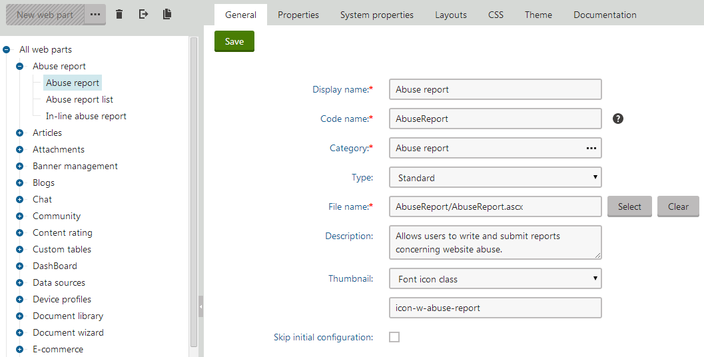
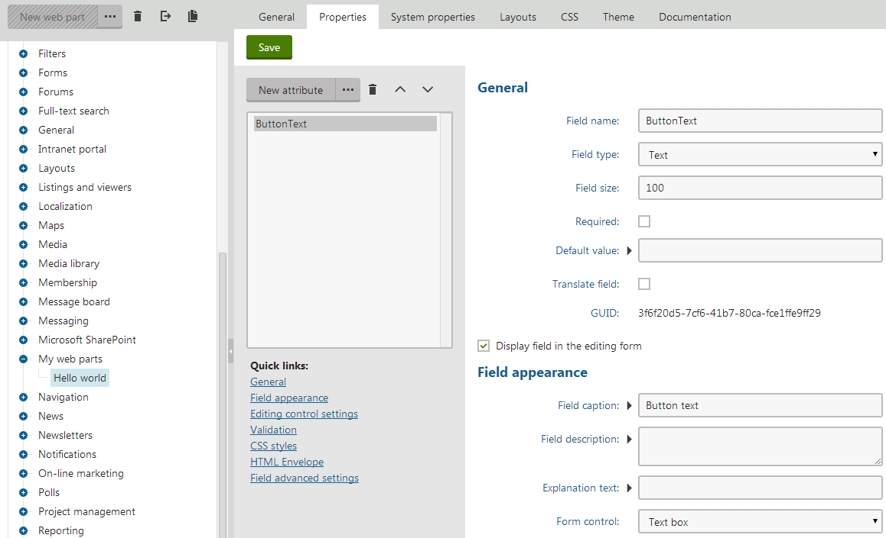
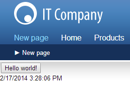

Creating new web parts
If the web parts included in Kentico by default do not meet your requirements, you can create your own web parts. This allows you to add any type of custom content or functionality to portal engine pages.
Developing new web parts consists of two basic steps:
Create the web part's code files in your web project.
Register the web part in the system.
Note: In many cases, it may be easier to achieve your goal by altering or extending one of the default web parts rather than developing an entirely new one.
Writing web part code
Implement web parts as user controls (.ascx files) that inherit from an appropriate base class:
|
Base class |
Namespace |
Use for |
|
CMSAbstractWebPart |
CMS.PortalEngine.Web.UI |
Standard web parts. |
|
CMSAbstractEditableWebPart |
CMS.PortalEngine.Web.UI |
Web parts that provide content editing functionality on the Page tab of the Pages application and in on-site editing mode (such as Editable text or Editable image). |
|
CMSAbstractLayoutWebPart |
CMS.PortalEngine.Web.UI |
|
|
CMSCheckoutWebPart |
CMS.Ecommerce.Web.UI |
E-commerce checkout web parts. |
To ensure that your custom web parts work correctly:
Edit the markup of the user control that implements the web part.
In the Control declaration, enter the full relative path of the code behind file into the CodeFile attribute (CodeBehind attribute on web application installations).
For example:
<%@ Control Language="C#" AutoEventWireup="true" Inherits="CMSWebParts_Viewers_Documents_cmsrepeater" CodeFile="~/CMSWebParts/Viewers/Documents/cmsrepeater.ascx.cs" %>You can add any required content into the web part's markup and write custom code behind logic.
Tips:
Display content from Kentico by placing Kentico Controls into the markup of your web parts.
See Working with web part properties to learn how to access the values of web part properties in the code.
To disable web parts in your code, set the StopProcessing property to true. All web parts inherit this property from the CMSAbstractWebPart base class.
You can implement web parts that have special behavior or additional content when viewed on the Design tab of the Pages application. Use the following code to check whether the web part is being rendered in Design mode:
usingCMS.PortalEngine;if(PortalContext.IsDesignMode(this.PagePlaceholder.ViewMode)){...}
Setting the properties of controls in web parts
If you use Kentico controls inside your web parts, it is recommended to set/initialize the control properties using a combination of the OnContentLoaded and SetupControl methods. You can view the code of the default listing web parts to see an example (e.g. ~/CMSWebParts/Viewers/Documents/cmsrepeater.ascx.cs).
For standard .NET or third party controls, you can set the properties in the handler of the web part control's Load event (OnLoad method).
If you encounter problems with the control life cycle, try adding your controls to the page through the User control web part. This web part enables you to dynamically load user controls on portal engine pages.
Storing files related to web parts
If your web part consists of multiple files (such as other ASCX controls, images, JS scripts), place these files in a sub‑folder under the directory containing the main web part's files. The name of the sub-folder must match the code name of the web part with _file appended. For example, if the web part's code name is WebPart, the sub‑folder must be WebPart_files.
This ensures that the system includes the additional files in the web part's export package when you deploy the website or distribute the web part to other developers.
Managing web parts in the system
Registering web parts
Before you can use your user controls as web parts, you need to register them as objects in Kentico. The system sorts web parts into categories, organized in a tree structure.
Open the Web parts application.
Select the category where you want to place the web part.
Click New web part.
Type a Display name for the web part.
Select Use existing file as the Code files option.
Specify the path of the user control in the File path field.
Click Save.
Define the properties of the web part. See Working with web part properties for more information.
You can now place instances of the web part onto portal engine pages on the Design tab of the Pages application.
Tip: You can register web parts before creating the user control source files in the web project. Select the Generate new files option when creating the web part, and the system automatically adds the required files according to the specified File name. The automatically generated user control inherits from CMSAbstractWebPart .
Configuring web parts
To edit the settings of a web part, open the Web parts application and select the web part in the category tree. When editing web parts, you can configure the following on the General tab:
|
General settings |
Description |
|
Display name |
The name of the web part displayed to users in the administration interface (in the web part toolbar or selection dialog). |
|
Code name |
Serves as a unique identifier for the web part (for example in the API). |
|
Category |
The category in the web part catalog where the system stores the web part. |
|
File name |
Contains the relative path to the user control that implements the web part. The path starts from the CMSWebParts folder. For example: AbuseReport/AbuseReport.ascx It is recommended to organize the source files of web parts in a way that matches the structure of the web part categories. |
|
Type |
Sets the type of the web part, which affects its behavior and properties. The system identifies different web part types with different colors and icons on the Design tab of the Pages application. The following web part types are available:
|
|
Skip initial configuration |
If checked, the system adds new instances of the web part directly onto pages without opening the property configuration dialog. This can be convenient, particularly in the case of web parts that are typically used with their default property values. |
|
Thumbnail |
Allows you to set the image that represents the web part in the selection catalog and web part toolbar. You can choose between two types of images:
|
|
Description |
Text describing the web part. The system displays the text:
|

Editing the settings of a web part in the administration interface
Styling web parts using CSS
We recommend that you style the content of web parts in the CSS that you use for the entire website. See Designing websites using CSS for more information on the two recommended approaches.
Example - Creating a new web part
The following example guides you through the process of creating a simple "Hello world" web part that displays a label and a button. When a user clicks the button, the label displays the current time.
Creating the web part code files
Open your web project in Visual Studio using the WebSite.sln (or WebApp.sln) file.
Right-click the CMSWebParts folder in the Solution Explorer window and click Add -> New Folder.
Name the sub-folder MyWebParts.
Create a Web User Control named HelloWorld.ascx in the MyWebParts folder.
In the Control declaration, enter the full relative path of the control's code behind file into the CodeFile attribute (CodeBehind attribute on web application installations).
<%@ Control Language="C#"AutoEventWireup="true"CodeFile="~/CMSWebParts/MyWebParts/HelloWorld.ascx.cs"Inherits="CMSWebParts_MyWebParts_HelloWorld"%>Add a Button and Label control into the control's markup.
<asp:Button ID="Button1"runat="server"Text="Button"/><br /><asp:Label ID="Label1"runat="server"Text="Label"/>Set the Visible property of the Label control to False.
Switch to Design mode and double-click the Button control.
Visual Studio opens the control's code behind file and creates a handler method for the button click event.
Add the following code into the Button1_Click method:
Label1.Text = DateTime.Now.ToString();Label1.Visible =true;Add the following references to the beginning of the control's code behind:
usingCMS.PortalEngine.Web.UI;usingCMS.Helpers;Modify the control's class declaration so that it inherits from CMSAbstractWebPart:
publicpartialclassCMSWebParts_MyWebParts_HelloWorld : CMSAbstractWebPartAdd the following code to the Page_Load method:
Button1.Text = DataHelper.GetNotEmpty(GetValue("ButtonText"),"Show time");Save the user control's files.
The web part's source files are now ready. If your Kentico project was installed as a web application, you must Build the project.
Registering the web part in the system
Log in to the Kentico administration interface and open the Web parts application.
Select the root of the tree (All web parts), click ... next to the New web part button and select New category.
Type My web parts into the Category display name field and click Save.
Select the new category and click New web part.
Specify the following values:
Web part: Create a new
Display name: Hello world
Code files: Use existing file
File path: ~/CMSWebParts/MyWebParts/HelloWorld.ascx
Click Save.
Switch to the Properties tab and click New field to create a web part property:
Field name: ButtonText
Data type: Text
Size: 100
Field caption: Button text
Form control: Text box
Click Save.

Defining the ButtonText property for the Hello world web part
Adding an instance of the web part to a page
Open the Pages application.
Create a new page in your website's content tree.
Switch to the Design tab.
Add the Hello world web part onto the page.
In the web part configuration dialog, set the value of the Button text property to Hello world!.
Click OK.
If you switch to Preview mode, you can see the button with a Hello world! caption. When you click the button, the label displays the current date and time.

Hello world web part on the live site (or Preview mode)